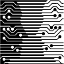

|  |
|
TODO: WRITE STUFF HERE CHECK ANNE'S ANNOUNCEMENT
Your project Web pages contain material relevant to the project as a whole and to your individual contribution to the project. The Web site must be self-contained with relative links only. Web sites must be completely static — this means no PHP, ASP, server-side JS or any such scripts. If your project is a web-accessible application, you must add an absolute link from the project Web site to the Web application, labelling it as a non-permanent external link. Please be sparing with external links and only link to well-established sites that are likely to remain for a long time. The entry point to the project is the project (group) Web page. This must indicate the accomplishments of the project and have the documents produced jointly by the team (like the pro- ject proposal). In future this will be the first impression people get of the work you did for your hon- ours project. The main entry page must be called index.html and must be located in the root directory of the website
Individual Web sites are a statement of the work of the individual. A mark is assigned for this when the Web pages are evaluated. All supporting documentation must be part of each Web site. Document files must be in a portable format (e.g., PDF, HTML), with Microsoft Word and LaTeX files converted as needed. Source code should be linked into Web pages as compressed archives.
TODO: WRITE STUFF HERE ABOUT JAMES, PATRICK AND JASON
As we stated in the synopsis our goal is to develop 3 algorithms for compressing the 32 bit floating point radio astronomy data of the Square Kilometer Array (SKA). Altough each of the group members are investigating a particular compression scheme, our goal is to publish our findings jointly in order to establish which of the 3 schemes performs best in terms of the tradeoff between throughput and compression ratio.
I will be investigating a predictive compression scheme. In such a scheme the streaming data is divided into chunks which can be processed in parallel. The goal is to divide the data in such a way as to exploit dimensional coherency (lets say compressing the values of a particular frequency over several time steps). Since the values will likely not change much (or change relatively slowly over the duration of several steps) the prediction scheme may yield accurate predictions of consequtive values. If this is the case the difference between both mantisa bits and exponent bits of the predicted value and the actual value will result in many leading zero bits, which can be stored in compressed form (saving the residual bits in uncompressed form). Such a scheme is simple and fast (see my paper litterature survey) and is ideal for scenarios where throughput enjoys preference over good compression ratios.
I will be implementing both an optimised CPU version (using both a vectorised instruction set when ever possible, as well as being multithreaded) and a GPU version of the code if time permits.
Blank
Blank